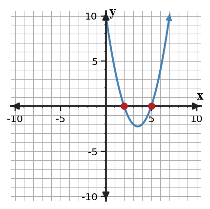
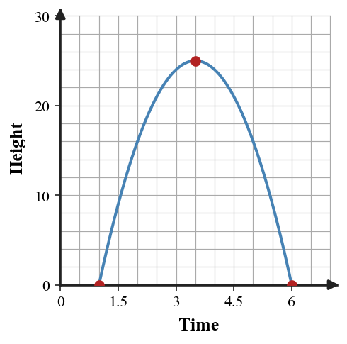

Solving Quadratics by Factoring
Mathematical idea: A product is zero only when at least one factor is zero, so factored form can reveal the solution values of a quadratic equation.
You will connect factors, zeros, tables, and graphs while solving quadratic equations. You will also decide whether the solutions make sense in a context, especially when a negative value appears.
Learning Target
Learning Target: Students will solve quadratic equations using factored form and interpret solutions.
I can statements
- I can construct factored quadratic equations from given zeros, intercepts, or contextual constraints.
- I can apply the zero product property to solve quadratic equations in factored form.
- I can determine whether solutions make sense in relation to a graph or context.
What's To Come
This is a long-range preview for future lessons. Do not solve it today. Instead, annotate it individually. Circle anything familiar, underline symbols or directions that seem important, and write notes about what information you think will be needed later.
As you annotate, ask yourself: What parts (words, symbols, graphs) do you KNOW? What parts look FAMILIAR? What parts look like jibberish?
Design A Model Or Context. Create or revise a quadratic task for Solving Quadratics by Factoring using the constraints below.
Use the provided graph as one representation. Design a launch-or-break-even context for a quadratic with two positive zeros; write a factored equation that matches the estimated intercepts and explain what both zeros mean in the context.

Intro
Directions
Read the introduction aloud with a partner or in a small group. As you read, annotate the text by highlighting important ideas, circling key vocabulary, and writing short notes about connections, questions, or predictions in the margins.
Quadratic equations can look complicated until their structure is visible. When a quadratic is written as a product of two factors equal to zero, the zero product property says at least one factor must be zero. That is why solving a factored quadratic often becomes two simpler linear equations.
A graph gives the same solution information in a different form. The zeros of a quadratic are the input values where the output is zero, and on a graph those locations are the $x$-intercepts. In a table, the same values appear where the output row is zero or changes sign near zero.
Contexts add one more decision after the algebra is finished. A projectile model might produce one negative time and one positive time, but time before launch may not fit the situation. A strong solution explains both the algebraic answer and the meaning of the value.
In this section, factored equations, tables of values, graphs of parabolas, and contextual statements all describe the same relationships. Moving between representations helps you check whether the factors, zeros, and intercepts agree.
Factoring is useful for break-even points, ground-contact times, and area relationships because each factor can represent a meaningful dimension or boundary. The goal is not just to find numbers; the goal is to explain what those numbers represent.
Stop and Discuss
- Why does the zero product property let us solve a factored quadratic equation?
- What do zeros and $x$-intercepts describe on a graph?
- Why might a solution from an equation be rejected in a real context?
In factored form, each factor shows a possible input that makes the output zero.
$$y=(x-2)(x-5)$$| $x$ | 2 | 3 | 5 |
|---|---|---|---|
| $y$ | 0 | -2 | 0 |
- The zeros are $x=2$ and $x=5$ because those inputs make one factor equal zero.
- On the graph, the zeros appear where the parabola touches the $x$-axis.

Context: If $x$ represents seconds, the zeros could describe two times when the height or profit is zero.
Example 1: Zero Product Property in a Launch Model
A small rocket's height model is already written in factored form. The equation $0=(t-4)(t+1)$ represents times when the rocket is at ground level.
- Solve the equation using the zero product property.
- Which solution makes sense for time after launch?
- Explain why the other algebraic solution should not be used in the launch context.
You Try It 1: Zero Product Property in a Profit Model
A club's simple profit model is $0=(p-12)(p+2)$ for break-even prices.
- Solve the equation using the zero product property.
- Which price is reasonable in this context?
- Explain what the unreasonable solution tells you about checking context.
Stop and Discuss
- How did the context change which algebraic solution you kept?
When an equation is in standard form, rewrite it as a product before using the zero product property.
$$x^2-7x+10=0$$ $$x^2-7x+10=(x-2)(x-5)$$ $$x-2=0 \quad \text{or} \quad x-5=0$$| Form | What it shows |
|---|---|
| $x^2-7x+10$ | constant term and coefficient structure |
| $(x-2)(x-5)$ | zeros at $2$ and $5$ |

Example 2: Factor Standard Form to Solve
A quadratic equation models when a school display frame reaches an area boundary. Solve the equation $x^2-4x-21=0$.
- Find two numbers that multiply to $-21$ and add to $-4$.
- Rewrite the equation in factored form and solve.
- How could a graph of the related parabola confirm your two solutions?
You Try It 2: Factor and Solve Standard Form
A quadratic equation for a path is $x^2+x-42=0$.
- Find two numbers that multiply to $-42$ and add to $1$.
- Rewrite the equation in factored form and solve.
- Describe where the solutions would appear on the graph of $y=x^2+x-42$.
Stop and Discuss
- What step made the zeros visible: factoring or using the zero product property? Explain.
A solution to a quadratic equation is useful only if it answers the question from the situation.
$$h(t)=-4(t-1)(t-6)$$| $t$ | 1 | 3.5 | 6 |
|---|---|---|---|
| $h(t)$ | 0 | 25 | 0 |

Context: The zeros mean the object is at ground level at $t=1$ second and $t=6$ seconds.
Example 3: Area With Linear Factors
A rectangular poster has side lengths $x$ inches and $x+5$ inches. Its area is $84$ square inches.
- Write a quadratic equation for the area.
- Solve for possible values of $x$ by factoring.
- Which solution is meaningful for the poster, and why?
You Try It 3: Garden Area With Factors
A garden bed has side lengths $x$ meters and $x+2$ meters. Its area is $48$ square meters.
- Write the area equation.
- Solve for $x$ by factoring.
- Choose the meaningful solution and justify it using the context.
Stop and Discuss
- Why is a negative side length different from a negative $x$-intercept on a graph?
Example 4: Critique a Factoring Error
A student solves $(x-8)(x+3)=0$ and says the solutions are $x=8$ and $x=3$.
Student claim: "Both numbers come from the constants in the factors, so both should be positive."
- Identify the correct two linear equations from the zero product property.
- Correct the student's solutions.
- Explain how the signs in the factors show the mistake.
You Try It 4: Find and Fix a Sign Error
A student solves $(x+6)(x-1)=0$ and says the solutions are $x=6$ and $x=-1$.
Student claim: "I switched both signs because the expression equals zero."
- Write the two correct equations from the factors.
- Find the correct solutions.
- Explain which sign was switched incorrectly.
Stop and Discuss
- How can checking each factor equal to zero prevent the sign error?
Summary
Today you solved quadratic equations by using factored form and the zero product property. You practiced moving from algebra to a graph or context so the solutions had meaning.
A zero is an input that makes the output equal $0$, and an $x$-intercept is the same idea shown on a graph. In factored form, each factor shows one possible zero.
A common error is copying the numbers from the factors without solving each linear equation. The sign in the factor must be checked carefully.
Strong understanding means you can solve the equation, connect the answers to intercepts, and explain which solutions make sense in a real situation.
Common Mistakes
- Copying signs from factors. Why it is tempting: the numbers are easy to see. What to check instead: set each factor equal to zero and solve.
- Keeping every algebraic solution. Why it is tempting: both values came from correct algebra. What to check instead: ask whether the value fits the context.
- Factoring before setting equal to zero. Why it is tempting: factoring looks like the main goal. What to check instead: make sure the equation equals zero before using the zero product property.
- Confusing zeros with vertex. Why it is tempting: both are important graph features. What to check instead: identify whether the output is zero or maximum/minimum.
- Dropping a factor. Why it is tempting: one factor may look simpler. What to check instead: check that the product has two factors and both are used.
Optional Future Task Reflection
Look back at the future task. Do not solve it yet. Highlight one part that makes more sense now than it did at the beginning. Circle one part that still feels unfamiliar. Write one sentence about what representation you would look at first.
Use the zero product property to solve each equation.
- $(x-3)(x+5)=0$
- $(2x-7)(x+1)=0$
Solve or interpret the quadratic situation for Solving Quadratics by Factoring. Show the algebra that supports your answer.
Solve $x^2-7x-18=0$ by factoring.
What is one idea about solving quadratics by factoring you understand better now than at the start of class? Write at least one complete sentence.
What is one thing about solving quadratics by factoring you still want to understand or practice? Be specific — name the idea, not just "everything."